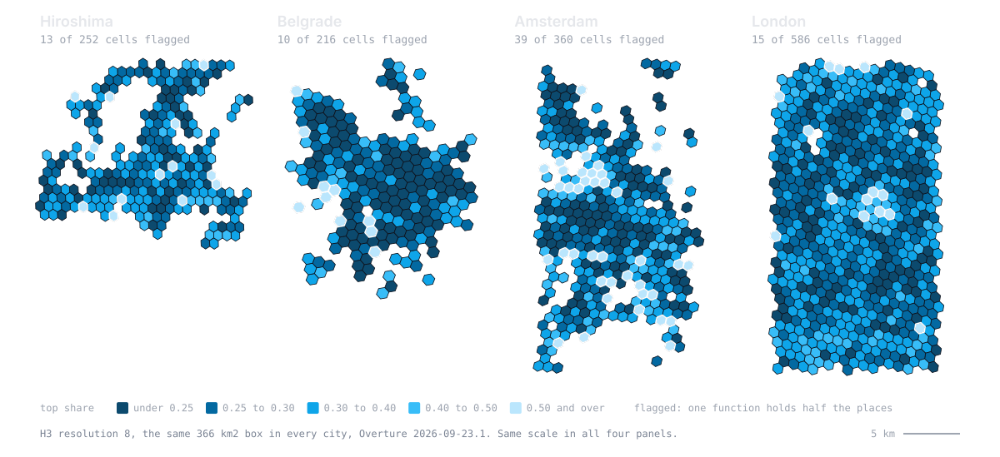
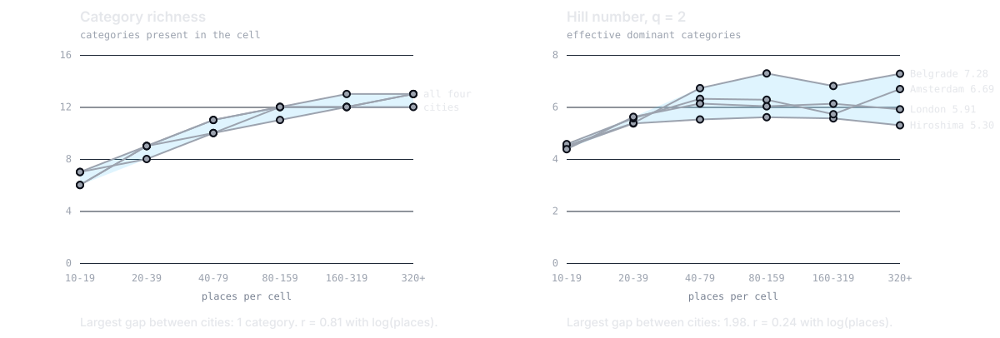
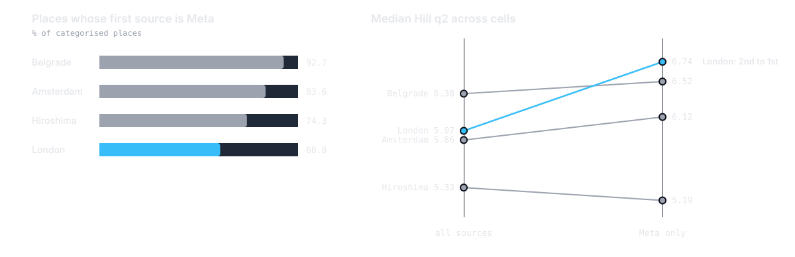

50 Lines of Python
Neighborhood DNA from Overture Maps Places
Any POI dataset will answer wrong twice. Open data is the one kind that lets you catch it, in one screen of code.
Where do we intervene first?
- before
- Cross-country research for EU policy institutions, 16 countries. The functional layer meant licensed POI feeds or field surveys.
- the first question of every city
- Where do we start a mixed-use programme? Which blocks are so mono-functional that they die after 19:00?
- this talk
- The same shortlist from a fully open dataset: minutes on a laptop, 50 lines, reproducible by any municipal analyst.
Neighbourhood DNA, and what it actually is
Take one grid cell. Look at every place inside it. Compute the share by function. That vector is the DNA, and three numbers say how mixed the cell is.
Kamiyacho, Hiroshima, cell 882e69a2bbfffff: share by function
- Hill q1
- 7.76 exp(−Σ p ln p): effective functions
- Hill q2
- 5.72 1 / Σ p²: effective dominant ones
- top share
- 0.31 max p: how mono-functional
The same maths ecologists use for species in a habitat, applied to functions in a city block.
The blocks where one function owns the street

13 cells in Hiroshima, 10 in Belgrade: short enough to walk. Hexagons compare cities; swap in your own blocks to act on one.
Open the interactive map made with: make cities
The obvious metric sees nothing

Counting categories measures how much data you have. Hill numbers measure the city.
made with: python checks.py 2026-09-23.1 table: docs/RESULTS.md, section 2
One filter changes the ranking

Overture blends providers. Belgrade is 93% Meta, London 61%. Nobody reads the sources column.
made with: python checks.py 2026-09-23.1 table: docs/RESULTS.md, section 3
What Overture ships that makes this possible
- GeoParquet on public S3
- The bbox filter runs storage-side: no download, no ETL, no account. A city costs 30 to 42 MiB of the 11 GB.
- taxonomy.hierarchy
- A standard hierarchy: 13 branches at level 1 to compare cities, 126 groups at level 2 for detail.
- bbox struct in every row
- Predicate pushdown without touching geometry.
- sources column
- You can see whose places each city is made of, which is the basis of check 2. With a closed feed you take the blend on trust.
- monthly releases
- Each one stays on S3 for 60 days. Archive your extract or nobody can rerun your numbers.
- open licences per source
- CDLA-Permissive 2.0, Apache 2.0 and CC0 in these four cities, recorded place by place.
Overture Maps Foundation, docs.overturemaps.org. Release 2026-09-23.1 holds 81 million places.
No download. No ETL. One screen.
#!/usr/bin/env python3# /// script# requires-python = ">=3.11"# dependencies = ["duckdb==1.5.6", "scikit-learn==1.9.1"]# ///"""Neighborhood DNA from Overture Maps Places. FOSS4G Hiroshima 2026. python dna.py WEST SOUTH EAST NORTH NAME [RELEASE | extract.parquet] python dna.py 132.35 34.30 132.55 34.48 hiroshimaWrites NAME.geojson: one H3 cell per feature with its category shares (theDNA), Hill numbers, TF-IDF signature and HDBSCAN label. Nothing is downloaded:DuckDB reads the parquet on S3 and pushes the bbox filter down to storage."""import jsonimport sysimport duckdbfrom sklearn.cluster import HDBSCANS3 = "s3://overturemaps-us-west-2/release"# H3_RES 8: hexagons of 0.6-0.8 km2, the area drifts with location (CAVEATS 4).# LEVEL 1: the 13 top branches of the taxonomy; 2 gives ~125 groups.# MIN_POI 10: below that the diversity metrics are sampling noise.H3_RES, LEVEL, MIN_POI = 8, 1, 10west, south, east, north, name = *map(float, sys.argv[1:5]), sys.argv[5]if not (-180 <= west < east <= 180 and -90 <= south < north <= 90): sys.exit("bbox order is WEST SOUTH EAST NORTH (lon lat lon lat)")duckdb.sql("INSTALL httpfs; LOAD httpfs; INSTALL spatial; LOAD spatial; SET http_retries = 6;" "INSTALL h3 FROM community; LOAD h3; SET s3_region = 'us-west-2';")source = sys.argv[6] if len(sys.argv) > 6 else max( # default: the newest release on S3 path.split("/")[4] for path, in duckdb.sql(f"FROM glob('{S3}/*/theme=places/*/*')").fetchall())files = source if source.endswith(".parquet") else f"{S3}/{source}/theme=places/type=place/*"duckdb.sql(f"""CREATE TABLE places ASSELECT h3_latlng_to_cell(bbox.ymin, bbox.xmin, {H3_RES}) AS cell, sources[1].dataset AS provider, taxonomy.hierarchy[least({LEVEL}, len(taxonomy.hierarchy))] AS categoryFROM read_parquet('{files}') WHERE len(taxonomy.hierarchy) > 0 AND bbox.xmin BETWEEN {west} AND {east} AND bbox.ymin BETWEEN {south} AND {north}""")cells = duckdb.sql(f"""WITH shares AS ( SELECT cell, category, n / sum(n) OVER c AS p, sum(n) OVER c AS poi FROM (SELECT cell, category, count(*)::DOUBLE AS n FROM places GROUP BY ALL) WINDOW c AS (PARTITION BY cell) QUALIFY poi >= {MIN_POI}), weighted AS ( -- TF-IDF: share in the cell x smoothed inverse cell frequency SELECT *, p * (1 + ln((1 + count(DISTINCT cell) OVER ()) / (1 + count(*) OVER k))) AS w FROM shares WINDOW k AS (PARTITION BY category))SELECT ST_AsGeoJSON(ST_GeomFromText(h3_cell_to_boundary_wkt(cell))) AS geometry, h3_h3_to_string(cell) AS h3, any_value(poi)::INT AS poi, count(*) AS richness, round(exp(-sum(p * ln(p))), 3) AS hill_q1, round(1 / sum(p * p), 3) AS hill_q2, round(max(p), 3) AS top_share, max(p) >= 0.5 AS flagged, first(category ORDER BY p DESC, category) AS dominant, -- ties: alphabetical map_from_entries(list((category, round(p, 3)) ORDER BY p DESC, category)) AS dna, map_from_entries(list((category, round(w, 3)) ORDER BY w DESC, category)) AS tfidfFROM weighted GROUP BY cell ORDER BY h3""")cells = [dict(zip(cells.columns, row)) for row in cells.fetchall()]if len(cells) < 10: sys.exit(f"only {len(cells)} cells hold {MIN_POI}+ categorised places: widen the bbox")categories = sorted({category for cell in cells for category in cell["dna"]})labels = HDBSCAN(min_cluster_size=10, copy=True).fit_predict( [[cell["tfidf"].get(category, 0) for category in categories] for cell in cells])blend = dict(duckdb.sql("""SELECT provider, round(100 * count(*) / sum(count(*)) OVER (), 1) FROM places GROUP BY 1 ORDER BY 2 DESC""").fetchall())meta = dict(source=source, bbox=[west, south, east, north], h3_res=H3_RES, taxonomy_level=LEVEL, min_poi=MIN_POI, providers_pct=blend)features = [dict(type="Feature", geometry=json.loads(cell.pop("geometry")), properties=dict(cell, cluster=int(label))) for cell, label in zip(cells, labels)]with open(f"{name}.geojson", "w") as out: json.dump(dict(type="FeatureCollection", metadata=meta, features=features), out)print(f"{name}.geojson: {len(cells)} cells, {sum(c['flagged'] for c in cells)} flagged, Overture " f"{source}\nHDBSCAN {labels.max() + 1} clusters, {(labels < 0).mean():.0%} noise\n{blend}")DuckDB reads Overture straight off S3 and the bbox filter runs at the storage side. CI fails if the script grows past 50 lines.
Planners were just the example
- Urban planning
- Where to start a mixed-use programme
- Transport
- Where car dependency is built into the block
- Retail siting
- Which function is missing from a busy cell
- Public health
- Food deserts: homes with no grocery in reach
- Tourism policy
- Where lodging pushes out everyday functions
- Humanitarian work
- Cities that have no other source at all
- Data quality
- The check that caught trap 2 measures bias in the open data itself
One number, top share, answers a different question in every one of these rooms.
Two checks before you trust a POI metric
Or you measure your data, not your city.
Or you compare providers, not places.
Code, data and the full list of caveats. Both checks are possible because the data is open.
Code MIT, slides CC BY 4.0. The categories field left the Overture schema in release 2026-09-23.0: write against taxonomy.
What I got wrong, found while packaging
- the pinned release
- On stage: a pinned release reproduces in December. It did not survive September, because Overture keeps a release for 60 days. dna.py now takes the newest release, or your own archived extract.
- equal-area cells
- H3 cells are not equal-area. At resolution 8 they average 0.58 km² in Hiroshima and 0.78 km² in Belgrade.
- the shortlist
- It moves between releases. Hiroshima: 16 flagged cells in 2026-08-19.0, 13 in 2026-09-23.1, 13 in both.
- the dominant function
- 37 Hiroshima cells have two functions tied for first place and arg_max picked one at random. Ties now break alphabetically, so two runs give the same file.
- the typology
- The abstract promised clusters. HDBSCAN returns 0 clusters and 100% noise in all four cities: function mix is a continuum.
Numbers on these slides are recomputed on release 2026-09-23.1. The stage version used 2026-07-22.0: slides as delivered (PDF).